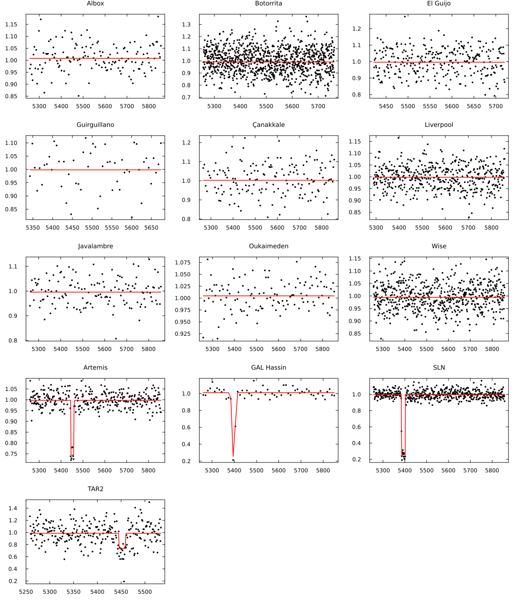
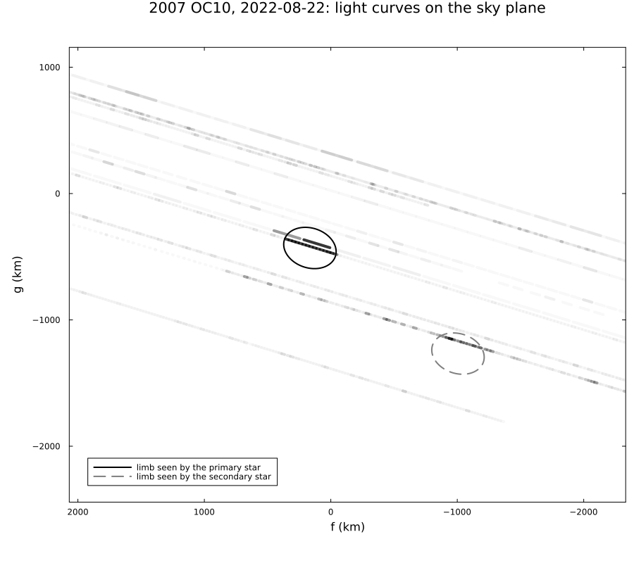
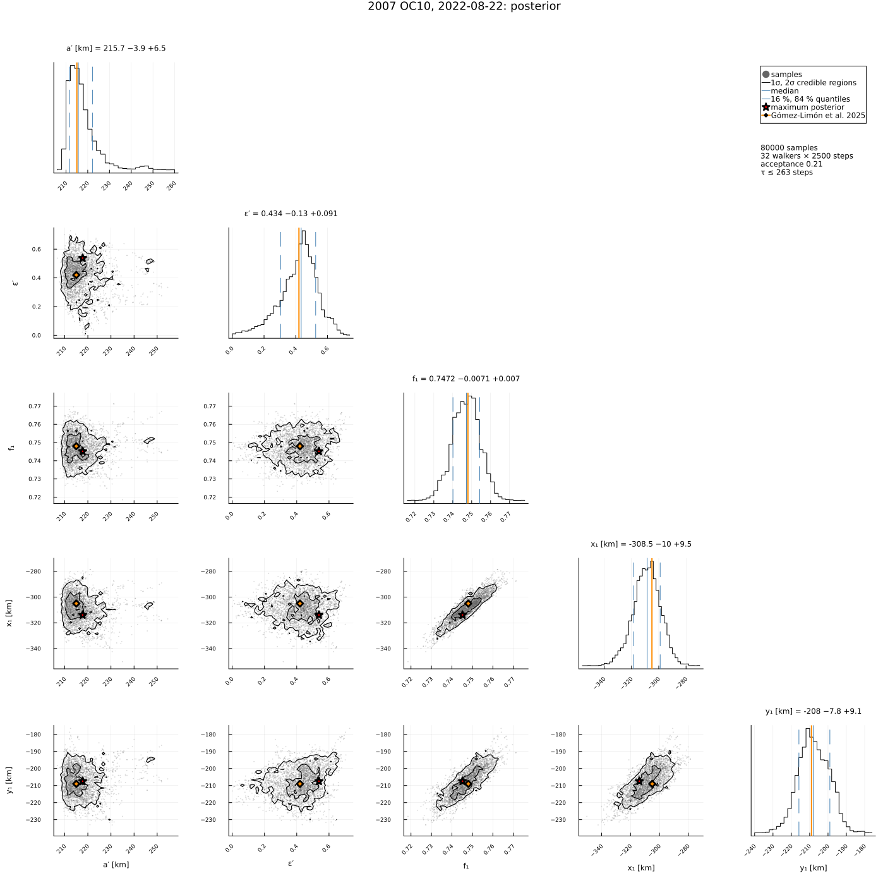

2007 OC10, 2022 August 22: an occultation of a double star
The occultation of Gaia DR3 2727866328215869952 by (470316) 2007 OC10 on 2022 August 22, reduced from the light curves of Gómez-Limón et al. (2025), A&A 697, A157, "Size and shape of the trans-Neptunian object (470316) 2007 OC10: Comparison with thermal data". Thirteen stations recorded light curves (published at the CDS). The stations in Sicily saw the flux drop by 75 %, those on Tenerife by 25 %, and Liverpool on La Palma, between them, saw nothing: the star is double, and the two groups saw the occultation of its two components.
The light curves are fitted directly (photometry = true) with the double-star model (double_star = true): an ellipse, and two point-like stars, the primary with the fraction f₁ of the flux at (x₁, y₁) from the photocentre and the secondary at −f₁/(1 − f₁)·(x₁, y₁), each occulted by the limb, with diffraction, the stellar disc and the exposure time. As in the paper, the uncertainties come from the posterior.
| a′ (km) | b′/a′ | D_eq (km) | f₁ | separation (mas) | PA of the secondary (°) | |
|---|---|---|---|---|---|---|
| Gómez-Limón et al. (2025) | 215 −7 +10 | 0.58 ± 0.16 | 330 −55 +56 | 0.748 −0.012 +0.011 | 57 −11 +4 | 56 −17 +3 |
The data are transcribed in examples/data/2007oc10_20220822.jl, with the light curves from the CDS and the stored JPL Horizons ephemeris, so the script runs offline:
julia --project=. examples/2007oc10_2022.jl [output_dir] (default: examples/output/2007oc10_2022)The code is not run when the manual is built. The output after each section is that of the last run of examples/2007oc10_2022.jl, stored in examples/output/2007oc10_2022/output.txt.
using Occultations, Random, Printf, Statistics
using Plots
import CairoMakie # saves the GeoMakie maps (Makie figures)
include(joinpath(@__DIR__, "data", "2007oc10_20220822.jl"))
out = length(ARGS) >= 1 ? ARGS[1] : mkpath(joinpath(@__DIR__, "output", "2007oc10_2022"))
rng = MersenneTwister(2022)
P = OC10_PAPER
q(x) = quantile(x, [0.15865525393145707, 0.5, 0.8413447460685429])
pm(x; d=1) = (v = q(x); @sprintf("%.*f −%.*f +%.*f", d, v[2], d, v[2] - v[1], d, v[3] - v[2]))
ppm(t; d=1) = @sprintf("%.*f −%.*f +%.*f", d, t[1], d, t[2], d, t[3])Event and geometry (paper values in parentheses)
ev = oc10_event()
D = ev.ca.dist_km
@printf("distance %.3f au (%.3f), shadow velocity %.2f km/s (%.1f), Fresnel scale %.2f km at 0.6 µm (%.1f)\n",
D / 1.495978707e8, P.distance_au, ev.ca.vel, P.velocity, fresnel_scale(0.6, D), P.fresnel_km)
println("the exposures (0.3–10 s) cover 7–240 km at the body: the light curves are dominated by them")
for c in ev.chords
lc = c.lightcurve
@printf(" %-13s %4d points, exposure %5.2f s, lowest flux %.2f\n", c.name, length(lc.time), Occultations.exptime(lc),
minimum(lc.flux))
enddistance 35.532 au (35.532), shadow velocity 23.62 km/s (23.6), Fresnel scale 1.26 km at 0.6 µm (1.3)
the exposures (0.3–10 s) cover 7–240 km at the body: the light curves are dominated by them
Albox 144 points, exposure 3.00 s, lowest flux 0.85
Botorrita 1009 points, exposure 0.50 s, lowest flux 0.71
El Guijo 299 points, exposure 1.00 s, lowest flux 0.79
Guirguillano 55 points, exposure 10.24 s, lowest flux 0.82
Çanakkale 156 points, exposure 3.00 s, lowest flux 0.81
Liverpool 465 points, exposure 1.18 s, lowest flux 0.83
Javalambre 135 points, exposure 4.00 s, lowest flux 0.81
Oukaimeden 120 points, exposure 2.00 s, lowest flux 0.91
Wise 598 points, exposure 1.00 s, lowest flux 0.83
Artemis 323 points, exposure 0.30 s, lowest flux 0.72
GAL Hassin 58 points, exposure 9.00 s, lowest flux 0.21
SLN 499 points, exposure 1.00 s, lowest flux 0.19
TAR2 271 points, exposure 1.00 s, lowest flux 0.19The light curves fitted directly: a single star and a double star
The starting values are the paper's solution in the frame of the JPL ephemeris used here: the paper's astrometric position of 2007 OC10 (Table 5) minus the ephemeris gives the centre; the ellipse and the stars are taken from Table 3 (the tilt ϕ of the major axis from east towards north is the position angle 180° − ϕ of the minor axis).
t = Epoch(P.astrometry.epoch)
ra, dec, _ = ephem_radec(ev.body, t)
f0 = (parse_ra(P.astrometry.ra) - ra) * cosd(dec) * 3.6e6 / 206264806.247 * D
g0 = (parse_dec(P.astrometry.dec) - dec) * 3.6e6 / 206264806.247 * D
start = Dict(:center_f => f0, :center_g => g0, :equatorial_radius => P.a[1], :oblateness => 1 - P.b_over_a[1],
:position_angle => 180 - P.tilt[1], :star_f1 => P.f1[1], :star_x1 => P.x1[1], :star_y1 => P.y1[1])
@printf("start: centre (%.0f, %.0f) km from the paper's astrometric position\n", f0, g0)
single = filter(kv -> !startswith(String(kv[1]), "star"), start)
rs = fit(LimbProblem(ev; photometry=true, init=single); starts=4, rng=rng)
@printf("single star: χ² = %8.1f for %d degrees of freedom (χ²/dof = %.2f)\n", rs.chi2, rs.dof, reduced_chi2(rs))
rd = fit(LimbProblem(ev; photometry=true, double_star=true, init=start); starts=4, rng=rng)
@printf("double star: χ² = %8.1f for %d degrees of freedom (χ²/dof = %.2f)\n", rd.chi2, rd.dof, reduced_chi2(rd))A single star cannot produce a 75 % drop in Sicily, a 25 % drop on Tenerife and nothing at Liverpool in between. The double star fits the light curves to their noise. Its least-squares covariance is not meaningful here: with exposures of up to 10 s the model light curve is piecewise linear in the contact times, and the Jacobian by finite differences is unreliable. The uncertainties come from the posterior, as in the paper.
println("best fit (double star):")
for n in (:center_f, :center_g, :equatorial_radius, :oblateness, :position_angle, :star_f1, :star_x1, :star_y1)
@printf(" %-18s %10.3f\n", n, rd[n][1])
endstart: centre (-119, -638) km from the paper's astrometric position
single star: χ² = 11652.6 for 4101 degrees of freedom (χ²/dof = 2.84)
double star: χ² = 4249.6 for 4098 degrees of freedom (χ²/dof = 1.04)
best fit (double star):
center_f -131.734
center_g -642.894
equatorial_radius 211.912
oblateness 0.258
position_angle 161.885
star_f1 0.746
star_x1 -297.011
star_y1 -212.072Posterior
post = sample(rd; nsteps=4000, burn=1500, rng=rng)
display(post)
@printf("autocorrelation times ≤ %.0f steps (%d steps after the burn-in)\n", maximum(autocorrelation_time(post)), 4000 - 1500)
S = samples(post)
col(n) = S[:, findfirst(==(n), post.names)]
ds = derived_samples(post; n=8000, rng=rng)
a, ε, φ = col(:equatorial_radius), col(:oblateness), col(:position_angle)
tilt = mod.(180 .- φ .+ 90, 180) .- 90 # the paper's ϕ: major axis from east towards north
@printf("a′ %s km (paper %s)\n", pm(a), ppm(P.a))
@printf("b′/a′ %s (paper %s)\n", pm(1 .- ε; d=2), ppm(P.b_over_a; d=2))
@printf("tilt ϕ %s ° (paper %s)\n", pm(tilt), ppm(P.tilt))
@printf("D_eq %s km (paper %s)\n", pm(2 .* ds.equivalent_radius), ppm(P.D_eq))
@printf("f₁ %s (paper %s)\n", pm(col(:star_f1); d=3), ppm(P.f1; d=3))
@printf("x₁, y₁ %s, %s km (paper %s, %s)\n", pm(col(:star_x1)), pm(col(:star_y1)), ppm(P.x1), ppm(P.y1))
@printf("separation %s mas (paper %s)\n", pm(ds.star_sep_mas), ppm(P.sep_mas))
@printf("PA secondary %s ° (paper %s)\n", pm(ds.star_pa), ppm(P.pa))
@printf("Δmag %s (paper %s)\n", pm(ds.star_dmag; d=2), ppm(P.dmag; d=2))
println("(the centre refers to the JPL ephemeris here, to the paper's CAHA-updated ephemeris there)")Posterior of LimbProblem: 32 walkers × 4000 steps (burn-in 1500), acceptance 0.19
center_f = -147.596195 -10.384940 +13.774890
center_g = -622.017448 -27.775665 +12.995603
equatorial_radius = 215.478008 -3.489622 +6.244048
oblateness = 0.417727 -0.136094 +0.125502
position_angle = 162.773731 -7.608811 +8.691805
star_f1 = 0.747642 -0.007187 +0.006387
star_x1 = -307.045841 -9.153836 +7.446007
star_y1 = -207.631834 -6.997212 +7.104859
autocorrelation times ≤ 247 steps (2500 steps after the burn-in)
a′ 215.5 −3.5 +6.2 km (paper 215.0 −7.0 +10.0)
b′/a′ 0.58 −0.13 +0.14 (paper 0.58 −0.16 +0.16)
tilt ϕ 17.2 −8.7 +7.6 ° (paper 16.0 −11.0 +12.0)
D_eq 329.4 −40.2 +37.2 km (paper 330.0 −55.0 +56.0)
f₁ 0.748 −0.007 +0.006 (paper 0.748 −0.012 +0.011)
x₁, y₁ -307.0 −9.2 +7.4, -207.6 −7.0 +7.1 km (paper -305.0 −38.0 +31.0, -209.0 −146.0 +22.0)
separation 57.0 −0.5 +0.6 mas (paper 57.0 −11.0 +4.0)
PA secondary 56.0 −0.8 +0.8 ° (paper 56.0 −17.0 +3.0)
Δmag 1.18 −0.04 +0.04 (paper 1.18 −0.07 +0.07)
(the centre refers to the JPL ephemeris here, to the paper's CAHA-updated ephemeris there)Astrometry (Table 5)
At the epoch of Table 5 (the predicted closest approach, 10 s after the one computed here): the body from its ephemeris plus the fitted centre; the two stars from the photocentre of Table 1 and their offsets (x₁, y₁) and −f₁/(1 − f₁)·(x₁, y₁).
mas(x) = x / D * 206264806.247
rb, db, _ = ephem_radec(ev.body, t)
rb_, db_ = Occultations.offset_radec(rb, db, mas(rd[:center_f][1]), mas(rd[:center_g][1]))
@printf("2007 OC10: RA %s Dec %s (paper %s %s)\n", format_ra(rb_; digits=5), format_dec(db_; digits=4),
P.astrometry.ra, P.astrometry.dec)
rs_, ds_ = geocentric(ev.star, t)[1:2]
f1, x1, y1 = rd[:star_f1][1], rd[:star_x1][1], rd[:star_y1][1]
for (lab, x, y, pra, pdec) in (("primary star", x1, y1, P.astrometry.ra1, P.astrometry.dec1),
("secondary star", -f1 / (1 - f1) * x1, -f1 / (1 - f1) * y1, P.astrometry.ra2,
P.astrometry.dec2))
r_, d_ = Occultations.offset_radec(rs_, ds_, mas(x), mas(y))
@printf("%-15s RA %s Dec %s (paper %s %s)\n", lab * ":", format_ra(r_; digits=5), format_dec(d_; digits=4), pra, pdec)
end2007 OC10: RA 22 08 33.06517 Dec +12 05 55.7400 (paper 22 08 33.0652 +12 05 55.7402)
primary star: RA 22 08 33.06717 Dec +12 05 55.6713 (paper 22 08 33.0672 +12 05 55.6714)
secondary star: RA 22 08 33.07027 Dec +12 05 55.7038 (paper 22 08 33.0703 +12 05 55.7035)Figures
# the light curves with the model of the best fit
plots = map(collect(ev.chords)) do c
lc = c.lightcurve
p = plot(lc; model=model_lightcurve(rd, c.name)[2], title=c.name, titlefontsize=9, legend=false, markersize=2,
xguide="", yguide="", grid=false)
p
end
savefig(plot(plots...; layout=(5, 3), size=(1100, 1300), left_margin=(3, :mm)), joinpath(out, "2007oc10_lightcurves.png"))
# the sky plane as in the paper's Fig. 4: every exposure of the photocentre as a segment, darker
# for lower flux; the limb as seen by the primary (black) and by the secondary (grey) star
c0 = (rd[:center_f][1], rd[:center_g][1])
pl = plot(; aspect_ratio=:equal, xflip=true, framestyle=:box, xguide="f (km)", yguide="g (km)", legend=:bottomleft,
grid=false, size=(900, 800), left_margin=(5, :mm), xlims=(c0[1] - 2200, c0[1] + 2200),
ylims=(c0[2] - 1800, c0[2] + 1800), title="2007 OC10, 2022-08-22: light curves on the sky plane")
for c in ev.chords
lc = c.lightcurve
tr = track(ev, c)
off = lc.tref - ev.tref
te = Occultations.exptime(lc)
for (t_, fl) in zip(lc.time, lc.flux)
a_, b_ = tr(off + t_ - te / 2), tr(off + t_ + te / 2)
plot!(pl, [a_[1], b_[1]], [a_[2], b_[2]]; color=:black, linewidth=4, alpha=clamp(1 - fl, 0.03, 1), label="")
end
end
O = outlines(rd)[1][2]
q_ = f1 / (1 - f1)
x, y = outline_points(O; center=(c0[1] - x1, c0[2] - y1))
plot!(pl, x, y; color=:black, linewidth=2, label="limb seen by the primary star")
x, y = outline_points(O; center=(c0[1] + q_ * x1, c0[2] + q_ * y1))
plot!(pl, x, y; color=:gray50, linewidth=2, linestyle=:dash, label="limb seen by the secondary star")
savefig(pl, joinpath(out, "2007oc10_skyplane.png"))
# the posterior
savefig(cornerplot(post; vars=[:equatorial_radius, :oblateness, :star_f1, :star_x1, :star_y1],
axislabels=Dict(:equatorial_radius => "a′ [km]", :oblateness => "ε′", :star_f1 => "f₁",
:star_x1 => "x₁ [km]", :star_y1 => "y₁ [km]"),
truths=Dict(:equatorial_radius => P.a[1], :oblateness => 1 - P.b_over_a[1], :star_f1 => P.f1[1],
:star_x1 => P.x1[1], :star_y1 => P.y1[1]), truth_label="Gómez-Limón et al. 2025"),
joinpath(out, "2007oc10_corner.png"))
println("figures written to ", out)The light curves of the thirteen stations with the model of the double star:

The exposures on the sky plane, darker for lower flux, with the limb as seen by each star (the paper's Fig. 4):

The posterior, with the values of the paper:
